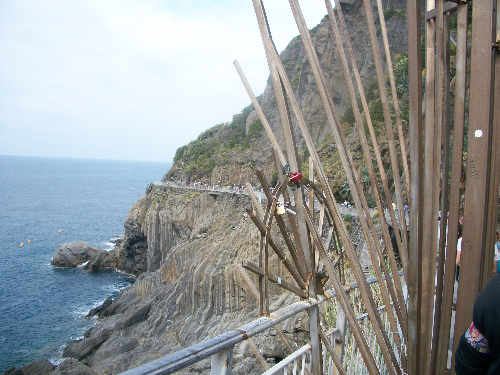

The Path of Love

Basic Facts about the Path of Love:
The path of love is a path between cities which has a direct view of the Mediteranean Ocean. While strolling through this path, it is impossible not to notice the insane number of locks and ribbons on railings and fences. It is no coincidence that people choose the Path of Love to place these locks and ribbons.
The meaning behind the locks and ribbons is to keep a memorable object on the path for luck! Listed on each ribbon and lock is either names, or initials, of the couple who left it there. This is meant to act as a metaphor of the couples relationship, and bring great luck and love to the two.
This is also a great reason to return to "Cinque Terre," and find your lock or ribbon, which should remain there for decades.